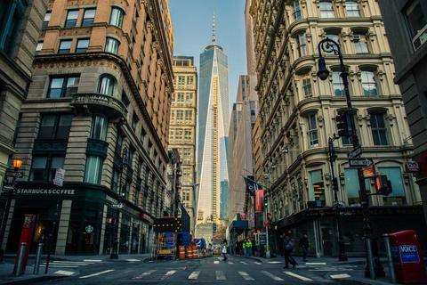

Browse the Top 200
来源：ARTnews

Read/Watch/Listen
来源：Artforum

Rowing Blazers x Grateful Dead 推出秋冬联乘系列
来源：Hypebeast

Paris Saint-Germain 与 The Weeknd 的 XO 发布完整联乘系列
来源：Hypebeast

LA MAISON JADE 发布 2027 春夏系列
来源：Hypebeast


Rare Artist-Designed Louis Vuitton Handbags Included in Upcoming Christie's Upcoming Online Sale
来源：ARTnews
Tokyo Drive Car Club 携手 fragment design 推出周年纪念合作T恤
来源：Hypebeast
Louis Vuitton 重返拉斯维加斯大道，为 2026 年 F1 拉斯维加斯大奖赛打造定制奖杯箱
来源：Hypebeast
A Wassily Kandinsky Sold by the Nahmads Fetches $85.8 M. at Christie’s, Notching a New Auction High
来源：ARTnews
Entertainment 娱乐
来源：HB·POPMART
Labubu 如何避免成为下一个 BE@RBRICK？
来源：HB·POPMART
POP MART x UNIQLO UT 最新联名系列「The Monsters」发布
来源：HB·POPMART
THE MONSTERS 森林秘密基地登陆杭州嘉里中心
来源：HB·POPMART
POP MART 释出全新 MEGA SPACE MOLLY 1000% RX-78-2 高达特别版
来源：HB·POPMART
走进 POP MART 成都「炉火纯青·燃」特别活动
来源：HB·POPMART
国内首个线上潮玩生态展，泡泡玛特举办虚拟潮玩艺术周
来源：HB·POPMART
From the Archive
来源：Artforum
Rosalind Krauss Makes Sense of Minimalism
来源：Artforum
TEFAF Maastricht Announces 2027 Lineup
来源：Artforum
Trellis Art Fund Announces 2026 Grantees
来源：Artforum
Empty Churches, Empty Art: On Manifesta 16
来源：Artforum
Marysia Paruzel’s Photographic Fairy Tales
来源：Artforum